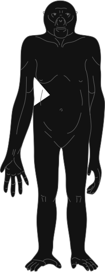
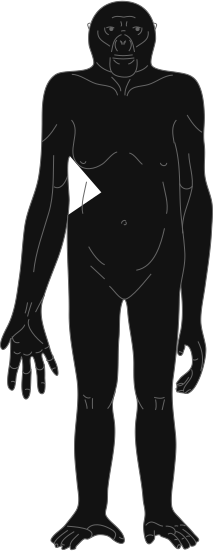

7 млн лет назад Земля почти такая же, как сейчас. В Африке более влажно и тепло, но становится суше. Тропики редеют.
В таких редеющих лесах жили сахелантропы — самые древние из известных двуногих обезьян.
Брюне и др. Новый гоминид из верхнего миоцена Чада, Центральная Африка


 
